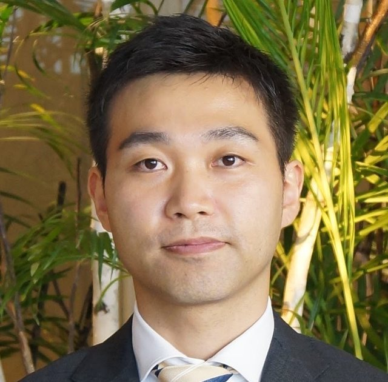

Director
Dong Zhang
Assistant Professor, Director of ESCL
NSF CAREER Awardee- Post-doc, Carnegie Mellon University, Mechanical Engineering (2020-2021)
- Ph.D./M.S., University of California, Berkeley, Systems Engineering (2020)
- B.S., University of Michigan, Civil and Environmental Engineering (2015)
- B.S., Shanghai Jiao Tong University, Electrical and Computer Engineering (2015)
OU AME profileGoogle ScholarLinkedInPh.D. dissertationNSF CAREER projectACCEL-RT project
Postdoctoral Researcher

Yuichi Kajiura
Postdoctoral Researcher
Joined Fall 2022
- Ph.D., University of Oklahoma, Mechanical Engineering
- M.S., Northeastern University, Computer Science (2021-2022)
- M.Eng., University of Tokyo, System Innovation (2019-2021)
- Graduate Certificate, Stanford University, Data Mining (2018-2019)
- B.Eng., Keio University, Applied Physics and Physico-Informatics (2005-2009)
Graduate Students
Jorge Esteban Espin
Ph.D. student, Mechanical Engineering
Joined Spring 2023
- M.S., Universidad de los Hemisferios, Project Management (2021-2022)
- B.S., National Polytechnic School, Electronic and Control Engineering (2015-2021)

Zhicheng Xu
Ph.D. student, Mechanical Engineering
Joined Spring 2025
- M.S., Oregon State University, Electrical Engineering & Computer Science (2021)
- B.S., Ningbo University, Electrical & Automation Engineering (2016)

Andres Felipe Solarte Barrera
Ph.D. student
Joined Fall 2026
- B.S., Chemical Engineering
LinkedIn
Micah Popejoy
M.S. student
Joined Fall 2025
- B.S., University of Oklahoma, Electrical and Computer Engineering (2025)
Haoran Zhu
M.S. student, Mechanical Engineering
Joined Fall 2025
- B.S., University of Oklahoma, Mechanical Engineering (2025)
Alumni
- Wonoo Choo, Ph.D.Robotics System Engineer, Texas Instruments
- Pero PlaninićPowertrain Modeling and Algorithms Intern, Joby Aviation
- Michael WilliamsMechanical Engineer, Pacific Northwest National Laboratory
- Logan ScottUS Navy. Master's thesis on state-of-health estimation in lithium-ion batteries
- Bryant PelkeyAssociate Instrument Engineer, Valero
- Toan MatsumotoMechanical Engineer, KOTOBUKI Seating International
- Riley McCueDaimler Truck North America
- Ziyad AsliMechanical Design Engineer, Tesla